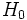
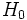

Algorithmus (signrank2)
Der Wilcoxon-Vorzeichen-Rang-Test bei verbundenen Stichproben kann verwendet werden, um zu testen, ob der Median der ersten Grundgesamtheit der gleiche ist wie der Median der zweiten Grundgesamtheit, wobei die zwei Grundgesamtheiten den gleichen Stichprobenumfang haben.
- Für
 , . Die Nullhypothese  ist, dass die Mediane der verbundenen Stichproben gleich sind, während die Alternativhypothese
, . Die Nullhypothese  ist, dass die Mediane der verbundenen Stichproben gleich sind, während die Alternativhypothese  ein- oder beidseitig sein kann. Der Wilcoxon-Vorzeichen-Rang-Test unterscheidet sich von dem Vorzeichentest dadurch, dass der Betrag der Werte berücksichtigt wird und nicht einfach nur die Richtung der Werte.
ein- oder beidseitig sein kann. Der Wilcoxon-Vorzeichen-Rang-Test unterscheidet sich von dem Vorzeichentest dadurch, dass der Betrag der Werte berücksichtigt wird und nicht einfach nur die Richtung der Werte.
- Für , wird die Differenz mit Vorzeichen gesucht.
- Die absoluten Differenzen
 werden nach Rang geordnet und den verbundenen Werten von wird der Durchschnitt der verbundenen Ränge zugewiesen. Der Anwender kann wählen, ob Fälle ignoriert werden sollten, bei denen , indem sie vor oder nach dem Ordnen nach Rang entfernt werden.
werden nach Rang geordnet und den verbundenen Werten von wird der Durchschnitt der verbundenen Ränge zugewiesen. Der Anwender kann wählen, ob Fälle ignoriert werden sollten, bei denen , indem sie vor oder nach dem Ordnen nach Rang entfernt werden.
- Die Anzahl der Nicht-Nullen wird gesucht und als
 bezeichnet.
bezeichnet.
- Jedem Rang wird das Vorzeichen der hinzugefügt, der er entspricht. Es wird angenommen, dass
 .
.
- Die Summe der Ränge mit positiven Vorzeichen wird berechnet.
- Die Wahrscheinlichkeit , die
 enspricht, abhängig von der Wahl der Alternativhypothese, . Wenn , wird P genau berechnet; ansonsten wird eine Approximation an zurückgegeben, die auf der approximativen Teststatistik der Normalverteilung basiert , wobei
enspricht, abhängig von der Wahl der Alternativhypothese, . Wenn , wird P genau berechnet; ansonsten wird eine Approximation an zurückgegeben, die auf der approximativen Teststatistik der Normalverteilung basiert , wobei 
Der Wert von kann verwendet werden, um den Signifikanztest für den Median gegen die Alternativhypothese durchzuführen. Wir nehmen an, dass  die Größe des Signifikanztests ist (das heißt, dass die Wahrscheinlichkeit ist, zurückzuweisen, wenn wahr ist). Wenn , dann sollte die Nullhypothese zurückgewiesen werden. Normalerweise ist 0,05 oder 0,01.
die Größe des Signifikanztests ist (das heißt, dass die Wahrscheinlichkeit ist, zurückzuweisen, wenn wahr ist). Wenn , dann sollte die Nullhypothese zurückgewiesen werden. Normalerweise ist 0,05 oder 0,01.
Weitere Einzelheiten zu dem Algorithmus finden Sie unter nag_wilcoxon_test (g08agc).